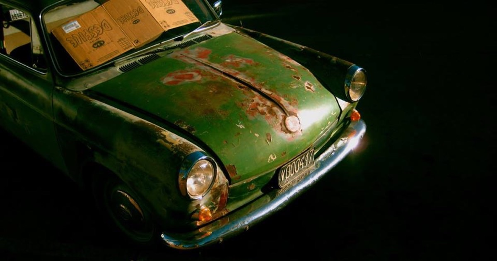
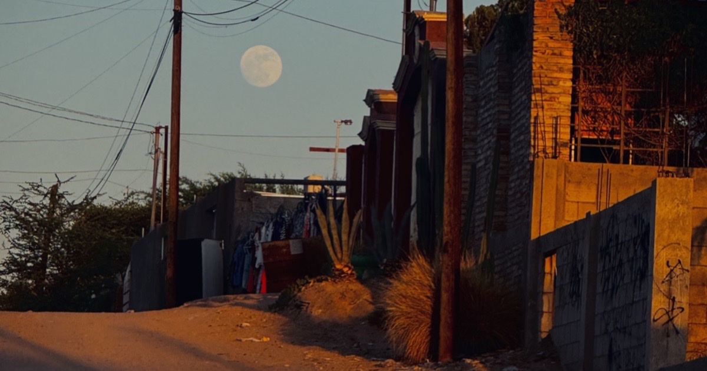
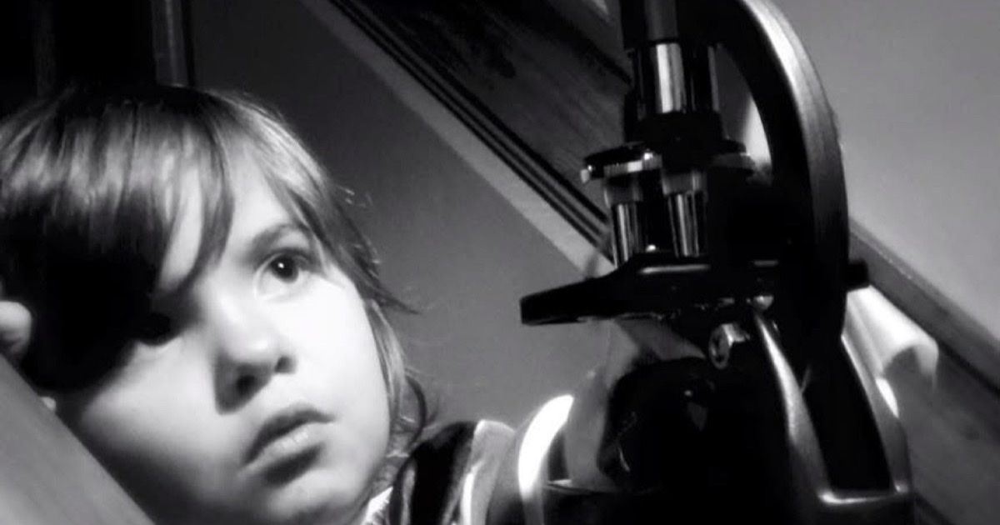

Direction 01
REEL
Cinema-black and letterboxed — a filmmaker's title sequence. Grain, timecode, and a scrolling filmstrip of documentary stills. Built to feel like the lights just went down.
View direction →
Direction 02
DISPATCH
A Sunday broadsheet on a curious man — Bodoni masthead, datelines, drop caps and a Guardian pull-quote. Warm paper, ink, and the romance of print. For the author and journalist.
View direction →
Direction 03
INDEX
Terminal-raw and monospace — every discipline logged like a manifest. Clickable rows, GPS coordinates, a live clock and an FAA cert number. For the multi-hyphenate who does it all.
View direction →